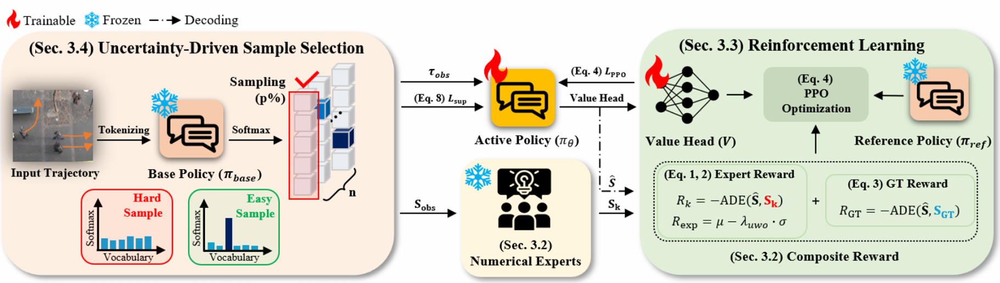

JunGyu Lee
I'm a Ph.D. student at the Graduate School of Artificial Intelligence, Yonsei University, where I'm advised by Hae-Gon Jeon in the Visual AI Lab. My research interests include robotics, crowd generation, and world models.
Previously, I received my M.S. in AI Robotics from KIST School (UST), advised by Gi Pyo Nam, and worked as an AI researcher at KIST and Seoul National University Hospital.
My goal is to develop human-centric AI that addresses complex societal challenges and creates meaningful real-world impact.
News
- Sep 2026ComPose is accepted to NeurIPS 2026.
- Jul 2026PSCT-Net is accepted to the MICCAI 2026 Workshop.
- Jun 2026DTC-TRUS is accepted to MICCAI 2026.
- Mar 2026Started my Ph.D. at Yonsei University in the Visual AI Lab, advised by Hae-Gon Jeon.
- Mar 2025V-NAW is accepted to the CVPR 2025 Workshop, with a Top 5 placement at the 8th ABAW Competition.
- Dec 2024NLA is accepted to AAAI 2025.
Research
I'm interested in robotics, crowd generation, and world models, and have also worked on facial expression recognition and medical image analysis.

Treating the grasping hand as a complementary cue rather than an occluder enables robust 6DoF object tracking from RGB video under heavy hand occlusion.
Distilling temporal coherence into a plain 2D segmenter during training removes frame-to-frame flicker in ultrasound video at no extra inference cost.

Differentiable back-projection and attention-guided refinement reconstruct 3D pediatric skull CT from just two X-rays, a low-dose alternative to CT scanning.
Adaptively weighting each frame in a clip handles label ambiguity and captures temporal variation in video-based facial expression recognition.
Emphasizing ambiguous samples while down-weighting noisy ones tackles label noise and class imbalance in facial expression recognition at the same time.
Composite facial features are analyzed to estimate a subject's anxiety level on low-power computing modules.
* equal contribution
Experience
- AI Researcher Seoul National University Hospital (SNUH)
- AI Researcher Korea Institute of Science and Technology (KIST)
- Research Intern Asan Medical Center (AMC)
Education
- Ph.D. in Engineering, Artificial Intelligence Yonsei University
- Master of Engineering, AI Robotics University of Science and Technology (UST), KIST School
- B.S. in Big Data Analytics Kookmin University
Honors & Awards
- 2025Top 5 Placement, 8th ABAW Competition @ CVPR Workshop
- 2024Best Paper Award, KIST Convergence Conference
- 2024Outstanding Technology Award, AI-Robotics Research Division, KIST